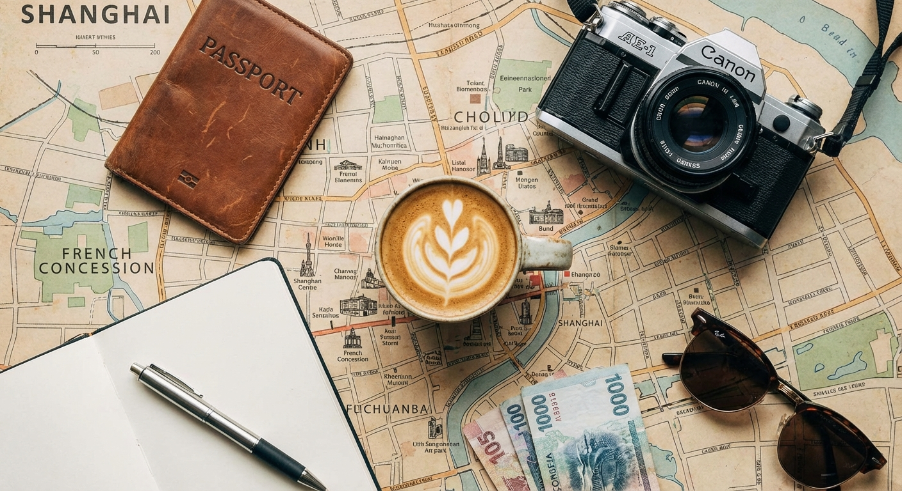
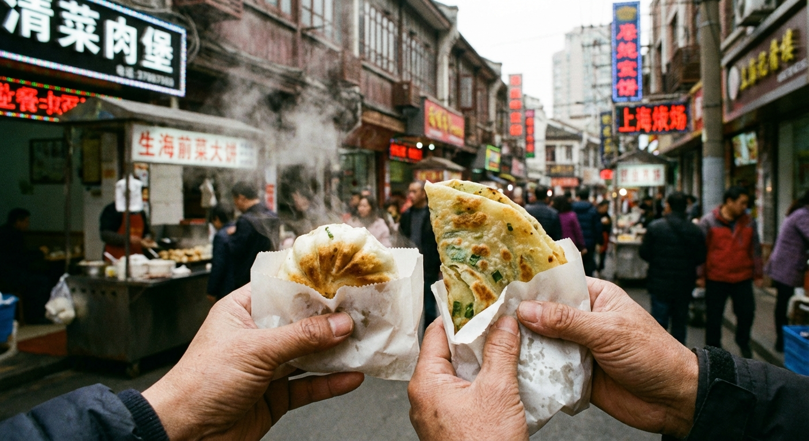
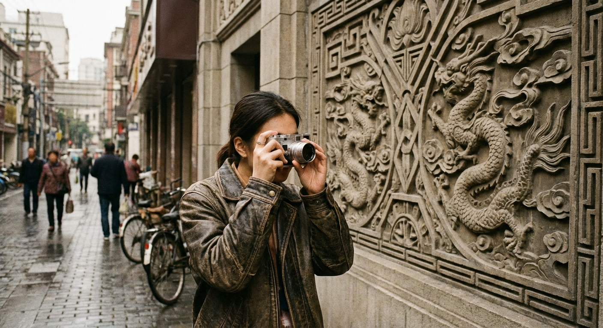

Stories from Shanghai
Explore insights and stories from our buddies and fellow travelers for authentic inspiration.

First Time in Shanghai? 5 Tips You Need to Know
Our buddy Chen has compiled the most important local advice to help you start your journey like a local.

An American's Diary: My Food Adventure with Jing
Alex shares his story of how he and his buddy Jing ate their way through the best Shengjian and Xiaolongbao in Jing'an.

Beyond the Bund: 8 Photogenic Hidden Gems in Shanghai
Follow our photography-loving buddies to discover stunning city spots you won't find on social media.